AI art is becoming more and more common among short-form content, music videos, and of course, art. However, many might not understand how exactly these images are created. In this part of the project, I attempt to create different images and even optical illusions.
It's easy to "destroy" a clear image into white noise -- however, it's hard to reconstruct a real image from white noise. A more easy reconstruction process would be to reverse or undo the process of destroying an image, also known as "denoising" an image.
For example, using HuggingFace's diffusion model package, we can create images using the prompts:
These images were created using "inference steps" of 20. This means that the image was denoised 20 times. If we increase the number of denoising steps, we get a more "accurate" image (which looks more realistic and less AI-art looking). The drawback of increasing the denoising steps is that it takes longer.

The same prompts, but with inference steps = 100

The same prompts, but with inference steps = 50 for step1, and inference steps = 20 for step2.
Given this real campanile image:

I perform the forward process, which is given by the equation:
Where alpha represents a cumulative product of the amount of noise is removed each time, and epsilon represents a random value picked within a Normal distribution ~N(0, 1). I can try to blur the image to denoise it, but that doesn't work well. The best kernel size I found was k=7:


Therefore, instead of simply blurring, I implement one-step denoising . The idea of one step denoising is that for different time steps, we estimate the amount of noise present in the noisy image. If we then subtract that estimated amount of noise from the noisy image, theoretically we should get a clean image. This works pretty well for small time steps (i.e. images that are not too noisy), but gets progressively worse as the image gets more noisy:
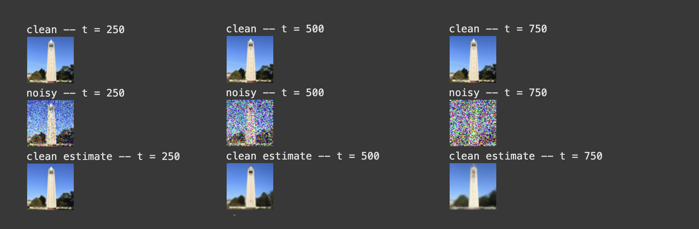
To fix this issue, we denoise in many steps, also known as iterative denoising . In the image below, I compare iterative denoising with one-step denoising:
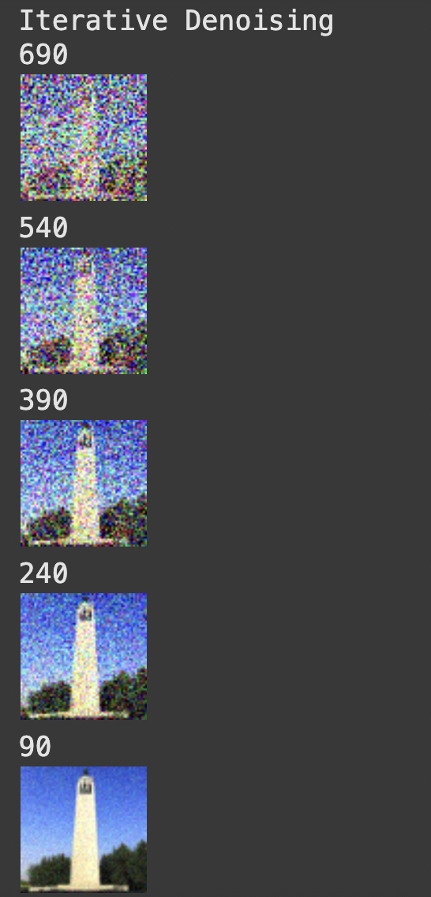
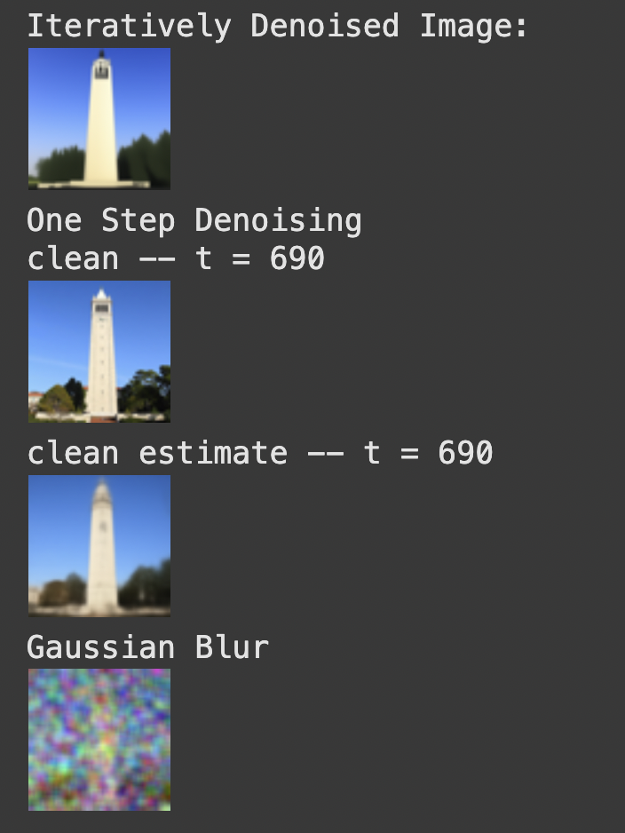
These images were generated using i=10, but if I set i to 0, I can denoise random noise to make images based on a prompt (the prompt was "a high quality image"):
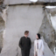
To improve the image quality even more, I use a technique called Classifier-Free Guidance (CFG). The gist of this technique is that I blend a conditional image estimate (image with a prompt like "a high quality image") with an unconditional image estimate (image with no prompt) to create the final output.
The equation for blending the two types of images is u + gamma(c-u) , where u is the unconditional noise estimate, c is the conditional noise estimate, and gamma is a constant that represents the strength of the CFG (a higher gamma value means the output will follow the conditional prompt more).
Here are some images generated using CFG with a gamma value of 7:
Depending on our i_start value (noise level), the accuracy of the photo (how similar it is to the test image) differs. The higher i is, the more accurate the image becomes -- by i=20, we get a campanile:
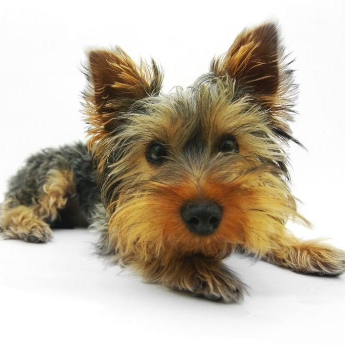

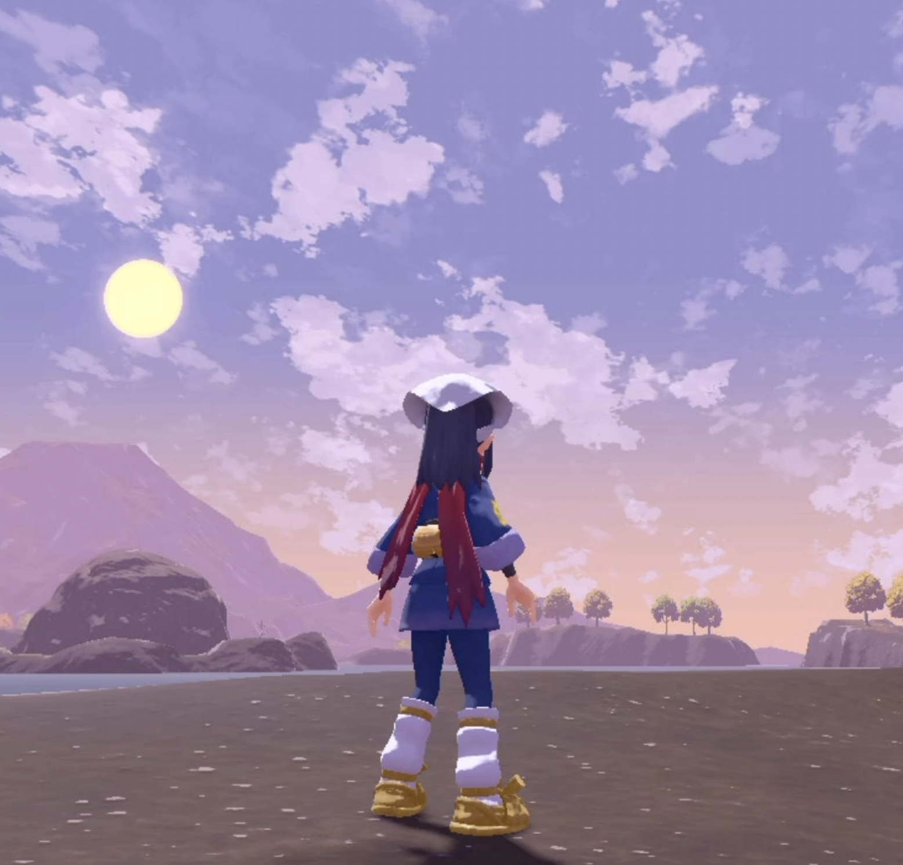
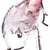
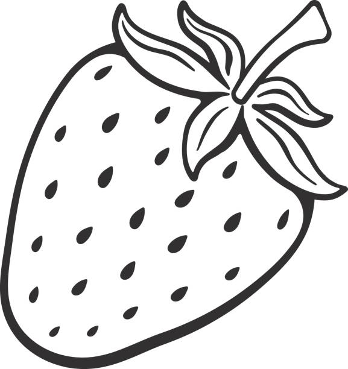
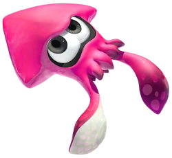
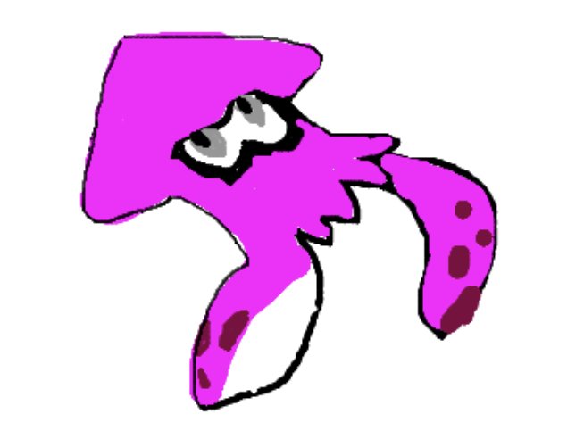
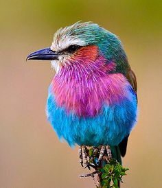
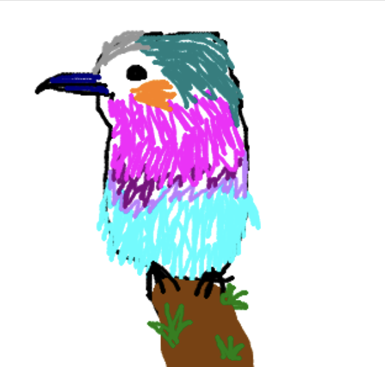
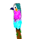

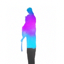
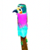
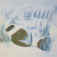
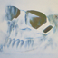
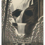
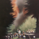